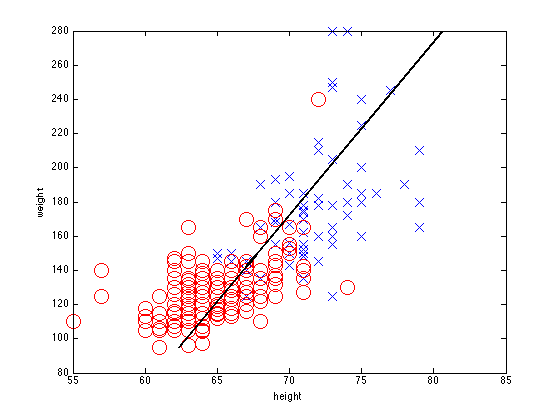

Run PCA on the height weight data
data = loadData('heightWeight');
X = data(:,2:3);
Y = data(:,1);
[n d] = size(X);
[W, Z, evals, Xrecon, mu] = pcaPmtk(X, 1);
maleNdx = find(Y == 1);
femaleNdx = find(Y == 2);
figure(1);clf;
plot(X(maleNdx,1), X(maleNdx,2), 'bx', 'markersize', 14);
hold on
plot(X(femaleNdx,1), X(femaleNdx,2), 'ro', 'markersize', 14);
xlabel('height'); ylabel('weight');
Z2 = [min(Z); max(Z)];
Xrecon2 = Z2*W' + repmat(mu, 2,1);
h=line([Xrecon2(1,1) Xrecon2(2,1)], [Xrecon2(1,2) Xrecon2(2,2)]);
set(h,'linewidth',2, 'color', 'k');
wPCA=W;
s = 5;
h=line([mu(1)-s*wPCA(1) mu(1)+s*wPCA(1)], [mu(2)-s*wPCA(2) mu(2)+s*wPCA(2)]);
set(h, 'color', 'k', 'linewidth', 3, 'linestyle', '--')
printPmtkFigure heightWeightPCA
